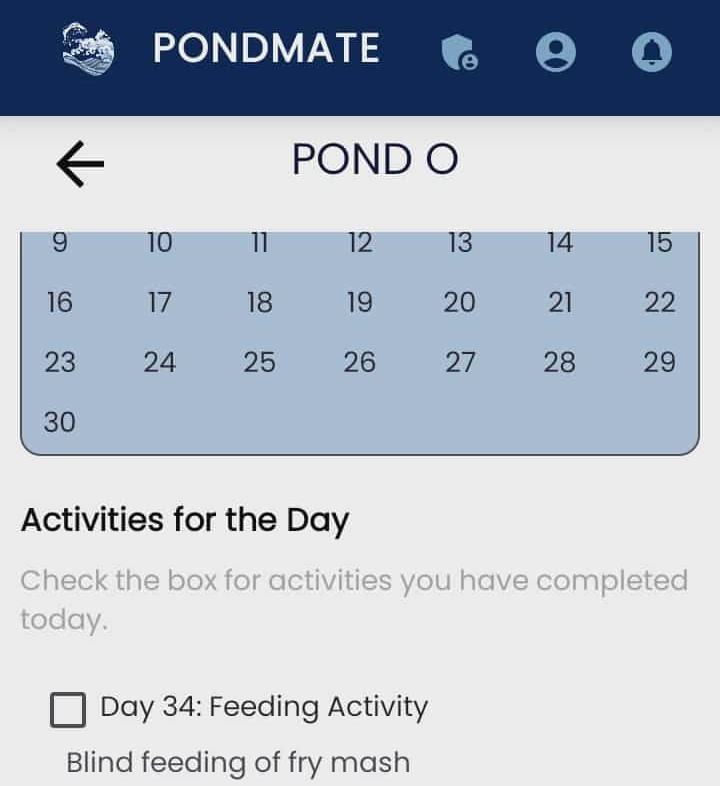
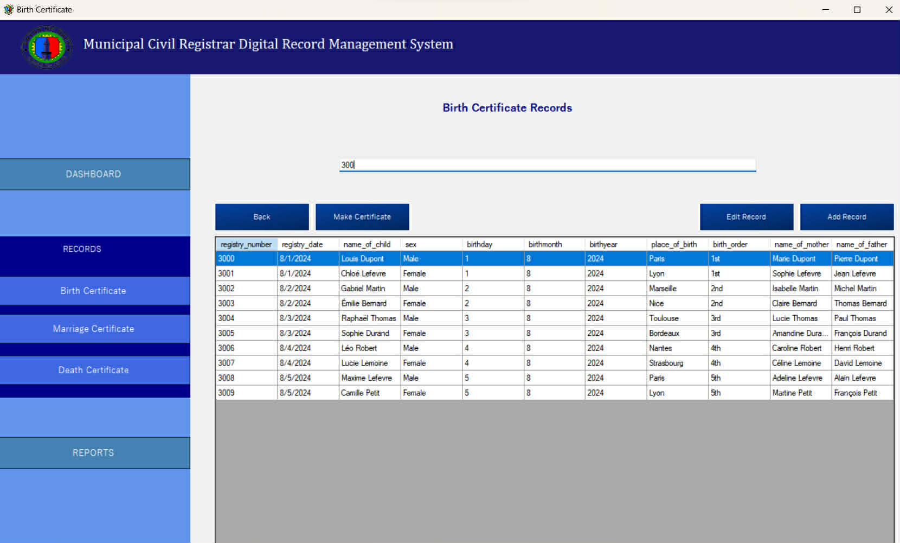
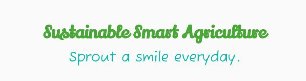

IT Undergraduate | Documentation • System Analyst • UI/UX Basics
I am an Information Technology undergraduate from Camarines Norte State College with strong skills in documentation, system analysis, and visual modeling. I focus on translating complex requirements into clear system structures, diagrams, and user-centered designs.
I analyze user and business requirements, create system workflows, and design logical structures using ERDs, DFDs, BPMN, and system architecture diagrams.
I design intuitive and user-friendly interfaces by applying basic UI/UX principles, wireframing, layout planning, and usability-focused design.
I produce well-structured technical documents, research papers, and system reports to support development, maintenance, and stakeholder communication.

A mobile-based fish production management app providing automated scheduling, calendar-based activities, and IoT-assisted fish feeding.
Role: Front-end & back-end support, database handling, documentation lead.
Skills: System Analysis, Database Handling, Technical Documentation

A digital record management system to organize, store, and manage civil registry records efficiently for a local government office.
Role: Lead in documentation, process flows, and diagrams.
Skills: System Documentation, Process Analysis, Requirements Writing

Modeling sustainable aquaculture and agriculture processes using structured system and process modeling techniques.
Role: Documentation lead for diagrams, process models, and technical documentation.
Skills: BPMN Modeling, System Analysis, Technical Documentation
Key project documents that highlight system specifications, research papers, and technical details. Click the "Preview" button to view the file.
Complete system requirements and planned features for the PondMate fish pond management app.
Preview:
Documentation including workflows, system diagrams, and process descriptions for the MCR system.
Preview:
Final research paper and technical documentation highlighting system modeling and BPMN diagrams.
Preview:
I have hands-on experience in programming, database handling, IoT, robotics, system analysis, and technical documentation. Here’s a visual overview of my skills:
Here’s my structured approach for each role, highlighting steps and responsibilities.
Meet with stakeholders to capture functional and non-functional requirements.
Use DFDs, ERDs, and BPMN diagrams to visualize workflows and data interactions.
Draft system architecture and identify database and interface needs.
Create clear and detailed documentation for developers, QA, and stakeholders.
Regularly update stakeholders and ensure alignment between business needs and technical solutions.
Assist in planning, tracking, and organizing project activities efficiently.
Maintain project logs, reports, and documents for transparency and reference.
Track project milestones and assist project managers in meeting deadlines.
Liaise with team members and stakeholders to clarify requirements and share updates.
Help resolve minor issues and escalate larger concerns to the project manager promptly.
📧 Email: pamelajanetopularbabejes@gmail.com
📞 Phone: 0995 786 3021